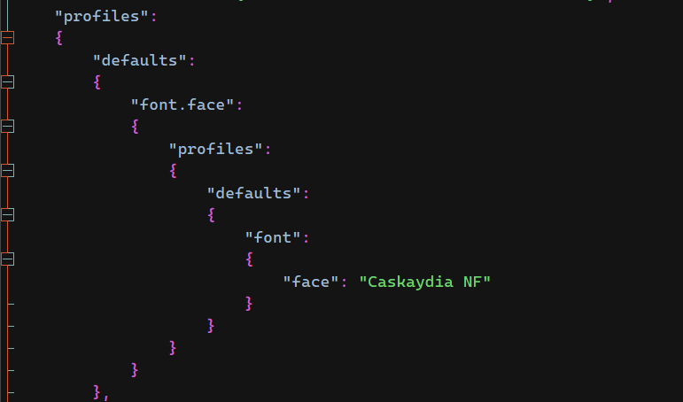
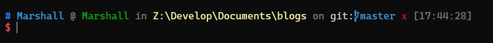
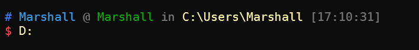

Windows安装posh
Windows安装posh
Windows安装posh
前言：相信很多用户都有对powershell改造的想法，例如安装更多主题，支持git显示，显示命令提示等。本篇文章将介绍posh相关工具在Windows上安装的步骤，如有文笔不当之处还望指出。
环境要求（默认已在Windows系统上安装）
- WindowsTerminal（微软商店下载安装）
- Git(且已激活环境变量)
安装posh-git
1. 安装
在 Windows 上，脚本执行策略必须设置为 RemoteSigned 或 Unlimited，需要以管理员身份在powershell中执行以下语句:
Set-ExecutionPolicy RemoteSigned -Scope CurrentUser -Confirm
安装posh-git:
Install-Module PowershellGet -Force
##A completely new installation
PowerShellGet\Install-Module posh-git -Scope CurrentUser -Force
更新:
PowerShellGet\Update-Module posh-git
2. 配置
在powershell终端对$PROFILE文件进行编辑：
notepad $PROFILE
在文件中追加以下内容：
Import-Module posh-git
其他可选项:
##To enable posh-git to be available in just the current host, execute:
Add-PoshGitToProfile
##To enable posh-git to be available in all your PowerShell hosts-console, ISE, etc, execute:
Add-PoshGitToProfile -AllHosts
##To enable posh-git to be available for all users on the system, execute:
Add-PoshGitToProfile -AllUsers -AllHosts
##To enable posh-git to be available for all users but only for the current host
Add-PoshGitToProfile -AllUsers
3: 使用 posh-git
接下来可以克隆一个git仓库，看看posh-git的效果:
git clone https://github.com/dahlbyk/posh-git
cd posh-git
如果看到与下图类似的表示，则说明posh-git安装成功：

安装oh-my-posh
wget下载安装
用管理员权限打开powershell，用winget安装oh-my-posh:
winget install JanDeDobbeleer.OhMyPosh -s winget
运行上述命令后，会下载安装oh-my-posh.exe和Oh My Posh的主题。
升级oh-my-posh
winget upgrade JanDeDobbeleer.OhMyPosh -s winget
下载字体
运行以下语句，选择你要安装的字体
oh-my-posh font install
我安装的是基于 Cascadia Code 设计的 Caskaydia Cove Nerd Font
打开Windows Terminal软件，点击设置-打开json文件，在profiles段的defaults属性中,添加font.face属性如下：
{
"profiles":
{
"defaults":
{
"font":
{
"face": "Caskaydia NF"
}
}
}
}
eg:

如果git::和master之间的字符没乱码，证明安装成功

设置主题
在新的powershell终端中，$POSH_THEMES_PATH指向了posh的主题路径。可以依此设置posh主题(以ys主题为例)，将下述语句添加到powershell的$PROFILE文件中：
oh-my-posh init pwsh --config "$env:POSH_THEMES_PATH\jandedobbeleer.ys.json"
重新开终端，可以看到配置生效

下载icons
安装：
Install-Module -Name Terminal-Icons -Repository PSGallery
将下述语句添加到powershell的$PROFILE文件中：
Import-Module -Name Terminal-Icons
重新启动终端，运行ls，看看效果：

特别提示
由于
Oh My Posh经常更新，有时候会被杀毒软件报错。以防万一，可以将oh-my-posh.exe添加到杀毒软件的白名单。PS: 在Powershell终端输入(Get-Command oh-my-posh).Source可获得可执行文件的路径powershell的
$PROFILE文件需要额外注意，包含"oh-my-posh init pwsh"的语句最好只出现一次，否则很容易触发终端报错。如：Get-PSReadLineKeyHandler : 找不到与参数名称“Key”匹配的参数综合以上两点，针对oh-my-posh，可以在
$PROFILE文件中只添加这一句语句:& ([ScriptBlock]::Create((oh-my-posh init pwsh --config "$env:POSH_THEMES_PATH\ys.omp.json" --print) -join "`n"))
其他小技巧
PowerShell按TAB键自动提示
在powershell的$PROFILE文件中，追加以下内容：
# Shows navigable menu of all options when hitting Tab
Set-PSReadlineKeyHandler -Key Tab -Function MenuComplete
参考链接
- https://github.com/dahlbyk/posh-git
- https://ohmyposh.dev/docs/installation/windows
- https://ohmyposh.dev/docs/installation/prompt
- Fonts | Oh My Posh
- https://techcommunity.microsoft.com/t5/itops-talk-blog/autocomplete-in-powershell/ba-p/2604524
- Windows Terminal Custom Prompt Setup | Microsoft Learn
- 记录美化Windows Terminal - bkycmd - 博客园 (cnblogs.com)